About "The Women Before Us"
Every woman has a story. Sometimes it’s shared over tea at the kitchen table. Sometimes it’s scribbled in an old letter. But far too often, these stories are told once and then forgotten, never written down, never passed on.
The Women Before Us is devoted to remembering those stories. This project is about honoring ordinary women: grandmothers, great-grandmothers, mentors, aunts, neighbors, and friends. Women who walked through history, even if they were never written into it.
Coding this Website
I built this website from the ground up as my second full coding project. Using HTML, CSS, and JavaScript, I developed it in Sublime Text, hosted it through GitHub Pages, and secured my custom domain through GoDaddy.
This project blends two passions, coding and storytelling. Every line of code is here to give these women’s stories a permanent home, ensuring their voices live on in the digital age.
You can view the HTML file I coded using the link below.
View my Code!
Lives Unwritten: Giving Voice to Louisiana’s Forgotten Women
I am committed to giving life to the stories of women who have too often been overlooked in traditional archives. Rather than focusing only on nonfiction accounts of women I know, I chose to research the lives of “ordinary” women throughout Louisiana’s history and reimagine their experiences through historical fiction. By “ordinary,” I mean women whose names never appeared in textbooks, women who were not wealthy, famous, or celebrated, but who nonetheless carried history forward in their everyday lives.
Working in collaboration with the Curator of Education at The Historic New Orleans Collection, I have been studying different eras of Louisiana history and writing from as many diverse female perspectives as possible. Each story includes the historical context needed to understand its setting, and each is followed by reflection questions that encourage readers to consider what life might truly have been like for a woman in that time.
Pick an Era!
Through this project, I hope to restore voice and vitality to women who lived beyond the margins of recorded history, ensuring that even those whose stories were never written down are still remembered.
Historical Context
France Claims Louisiana & the Early Settlements
In 1682, French explorer René-Robert Cavelier, Sieur de La Salle floated down the Mississippi River to its mouth and claimed the entire Mississippi basin for France, naming it “Louisiane” after King Louis XIV. It was an enormous claim, stretching from the Great Lakes to the Gulf of Mexico, even though France controlled only scattered posts and had few actual settlers. Indigenous nations still dominated the river valley, and French footholds survived only by negotiation and alliance.
Early settlements were tenuous and often moved. The French tried several “capitals” before finding a permanent one:
- 1699: Fort Maurepas (near modern Biloxi, Mississippi).
- 1702: Mobile, Alabama, chosen for its safer harbor.
- 1718: Bienville founded New Orleans on a crescent bend of the Mississippi.
- 1719: Back to Biloxi for a short time.
- 1722: New Orleans officially became the capital.
New Orleans was not a ready-made city, it was swampy, buggy, flood-prone, and plagued by fire. But its location was ideal: it gave access upriver to the Mississippi trade, was close to Lake Pontchartrain (for easier shipping to the Gulf), and allowed the French to plant a permanent flag in a contested region.
Daily life reflected this mix of hardship and exchange. Kitchens blended French techniques with Indigenous and African ingredients, maize, river fish, game, filé (Choctaw sassafras), okra, and dark roux (African and French), forming the foundation of gumbo. Rice entered through Carolina and West African knowledge networks, while bread, coffee, and wine remained markers of status. Sacred music and parish feast days gave rhythm to the year, while African musical traditions persisted in gatherings on Sundays, a rare day of rest for the enslaved. Clothing, too, reflected adaptation: linen and simple fabrics for practicality, silks and jewels when ships arrived from France. Etiquette followed French models but was reshaped by climate and scarcity.
The Company Era & the Mississippi Bubble
Louisiana was expensive to maintain, and the French crown was struggling financially in the early 1700s. Twice, it turned to private financiers to run the colony like a business.
1712–1717: Antoine Crozat. Crozat, one of the richest men in France, was given a 15-year monopoly over Louisiana’s trade. He hoped to find silver and gold like Spain had in Mexico. Instead, he found poor soil, unreliable crops, hostile Native groups, and high costs. He quit after five years, having lost money.
1717–1731: John Law’s Company of the West (later Company of the Indies). Law was a Scottish financier who convinced France to let him run Louisiana as part of his massive financial system. He promised that Louisiana was full of riches and recruited thousands of colonists, including French peasants, German farmers, prisoners, and poor women drawn from Paris’s institutions, as well as enslaved Africans beginning in 1719, to settle there.
Law’s system depended on selling shares of the Company to investors. In 1720, the “Mississippi Bubble” burst when people realized Louisiana was not yielding gold or easy wealth. The value of the Company’s stock collapsed, French investors were ruined, and trust in the colony plummeted.
Native Nations as Allies and Rivals
In the early 1700s, French colonists depended on Native people for food, trade, guides, and protection. Relationships were complicated:
- Allies: The Choctaw, Houma, Bayogoula, and other small groups (sometimes called “petites nations”) often allied with the French. They traded deer hides, fish, and corn, and in return received guns, metal tools, and cloth.
- Rivals: The Chickasaw (who allied with the English) and the Natchez (who resisted French expansion) were major threats. The French feared attacks on trade routes, which were lifelines for their settlements.
The biggest crisis came with the Natchez War (1729–1731). The French had built Fort Rosalie near present-day Natchez, Mississippi, and pressured the Natchez to give up farmland. In 1729, the Natchez launched a surprise attack, killing more than 200 French settlers and soldiers. This destroyed the French farming hub. The Company retaliated with help from Choctaw allies, eventually crushing the Natchez by 1731, but the war was devastating. Survivors were killed, enslaved, or scattered, and Louisiana’s fragile stability was shaken.
Arrival of the Ursulines in New Orleans (1727)
The Ursuline Order, founded in Italy in the 1500s, was devoted to education and charity, especially for women and girls. They were among the first Catholic female religious orders to focus on teaching instead of cloistered contemplation.
In 1727, twelve Ursuline nuns sailed from Rouen, France, to the fledgling city of New Orleans. They were recruited by John Law’s Company of the Indies (and approved by King Louis XV and the Bishop of Quebec) to provide education, nursing, and moral order in a colony struggling with instability, disease, hunger, and social tensions.
Their mission was twofold: to establish a convent school for French and Creole girls, and to care for the sick in the colony’s hospital. They also saw themselves as defenders of Catholic faith in a land with diverse Indigenous nations, enslaved Africans, and Protestant rivals.
The Ursulines ran one of the first schools for girls in North America. They taught literacy, catechism, domestic arts, and moral instruction. Girls from elite Creole families studied alongside poorer French children. Over time, the Ursulines also educated free women of color, Native girls, and even enslaved girls, making the school unusually inclusive for the 18th century.
The Ursulines were seen as guardians of female virtue. In a port city with a heavy gender imbalance (more men than women), the convent became a space of safety and control. Families sent daughters there to protect reputations.
The convent grew its own gardens and became a stable presence in a colony where soldiers, merchants, and governors often came and went. Their convent building, completed in 1752, is the oldest surviving structure in New Orleans.
Historical Fiction: New Orleans, Summer of 1729
Aceline
The river had left its scent in the air that morning, heavy and damp, as though the Mississippi itself lingered in every street. Mud clung to the bottoms of boots, and from the open square came the sharper smells of roasted maize, smoked fish, and onions frying in oil. The Place d’Armes was noisy, voices calling in French and Spanish, Choctaw traders bargaining in their own tongue, the bray of a mule tied too close to a cart of melons.
Aceline moved carefully through the crowd, her basket pressed against her hip. She was small enough to slip between the skirts and elbows of grown people, but each time she did, she felt the glance of someone’s eyes sliding across her face, weighing her, questioning. She kept her gaze down, wandering toward the far edge of town.
There, past the noise of the market, rose the tall white building whose walls seemed to shine against the river haze. The lime plaster of the Ursuline convent was still bright, and its cross caught the sun like a spark.
The convent was where some of the girls she knew disappeared each morning, French daughters with ribbons in their braids, who learned their letters and stitched neat hems beneath the nuns’ watchful eyes. To them, the convent was part of the pattern of their lives, as ordinary as prayer before supper.
Aceline slowed her steps without meaning to, letting her basket rest heavier on her hip. She was not accompanied by a wealthy father, nor a mother who could greet the sisters in polished French. Still, she slowed near the convent gate.
Beyond its iron bars came the muffled sound of the sisters’ songs, a rhythm unlike the drums Aceline knew from Houma gatherings.
Her mother Maraché had first introduced her to the sanctity of music. She recalled the feeling of her cheek pressed against her mother’s shoulder, drum vibrations shivering through her bones. The drum was not just sound but pulse, steady as breath, steady as earth. Sparks from the fire circle leapt and fell, painting her mother’s face in light that came and went.
But her father’s world had claimed her too. Pierre, who always smelled of muskets and river wind, used to carry her on his shoulders through the narrow streets of New Orleans. He was the one who taught her how to shape French syllables and bow before the priest. He was a trader, always moving between boats and warehouses. He laughed too loudly after drinking with other men, but always softened when he lifted Aceline’s hair from her face and called her “ma petite.”
Now he was gone on some journey upriver, or so the neighbors said. Sometimes she wondered if he was truly coming back. Her mother had not said as much, only tightened her jaw and pulled Aceline closer into the Houma circle. The Houma themselves were shifting too, pressed downriver by Chickasaw enemies and drawn nearer to the French towns than they once had been.
The city around her was restless. Men in rough coats argued over the price of flour, their voices sharpened by rumor of shortages upriver. A group of Choctaw traders passed with bundles of pelts, watched warily by French soldiers posted near the square. Everyone whispered of Natchez raids, of fields burned and settlers killed along the bluffs of the Mississippi. Even at eleven years old, Aceline could feel the tension in every conversation.
She knew this unease by heart. The Houma knew the shifting alliances, Choctaw with the French, Chickasaw with the English, Natchez defending their fields. Maraché told her once that the world was like the river in spring flood: swelling, rushing, carrying everything in its path. Aceline sometimes wondered if she herself was caught in that current, tugged in two directions, toward her mother’s fire and her father’s chapel.
Aceline shifted her basket higher, fingers brushing the rough twine handle. Inside, wrapped in broad leaves, were the sprigs of herbs Maraché had gathered at dawn, sassafras root, bitterleaf, a clutch of crushed willow bark. Her mother sent her with them when the sisters were rumored to be needing remedies.
Finish Aceline’s Story
- Aceline feels the pull of both her Houma heritage and her French Catholic upbringing. Write a scene where she must make a choice, large or small, that reveals which world she leans toward. What does she gain, and what does she lose?
- Imagine Aceline takes one bold step through the Ursuline convent’s gates. How would the sisters see her? How might she see them? Write a diary entry from her point of view.
- Her father’s absence weighs on her. Write a letter Aceline might compose to him, whether it ever reaches him or not. What does she want him to know about her mother, her city, or herself?
- Choose one voice from the bustling Place d’Armes, French soldier, Choctaw trader, German farmer, enslaved African, or a Creole woman. Write a short monologue where they describe their hopes and fears about living in this fragile colony.
- Take Aceline’s story where you imagine it might go: does she join the convent, return to the Houma, follow her father, or forge an unexpected path?
References
Clark, E. C. (2025, February 19). Law, John (1671–1729). In Oxford Dictionary of National Biography. Oxford University Press. https://www.oxforddnb.com
Gehman, M. (n.d.). French Market, New Orleans. 64 Parishes. Louisiana Endowment for the Humanities. https://64parishes.org
Historic New Orleans Collection. (n.d.). Hurricane of 1722 in New Orleans. https://www.hnoc.org
Knipmeyer, K. J. (n.d.). German Coast. 64 Parishes. Louisiana Endowment for the Humanities. https://64parishes.org
Louisiana Digital Library. (n.d.). Ursuline nuns in New Orleans. https://louisianadigitallibrary.org
National Park Service. (n.d.). The Natchez Revolt of 1729. Natchez National Historical Park. https://www.nps.gov
New Orleans Historical. (n.d.). The Great Hurricane of 1722. https://neworleanshistorical.org
Stouff, L. E. (n.d.). Ursulines of New Orleans. 64 Parishes. Louisiana Endowment for the Humanities. https://64parishes.org
The Historic New Orleans Collection. (n.d.). Catholic Church in New Orleans. https://www.hnoc.org
USHISTORY.org. (n.d.). The Code Noir (1724). https://www.ushistory.org
Vapnek, L. (2025). John Law and the Mississippi Bubble. In History Reference Center. ABC-CLIO.
Vogel, C. (n.d.). Natchez Indians. 64 Parishes. Louisiana Endowment for the Humanities. https://64parishes.org
Wikipedia contributors. (2025, February 10). French and Spanish colonial Louisiana. In Wikipedia. https://en.wikipedia.org/wiki/French_and_Spanish_colonial_Louisiana
Wikipedia contributors. (2025, February 21). Custom of Paris. In Wikipedia. https://en.wikipedia.org/wiki/Custom_of_Paris
Wikipedia contributors. (2025, February 21). French Colonial Louisiana government. In Wikipedia. https://en.wikipedia.org/wiki/French_Louisiana_government
Wikipedia contributors. (2025, February 21). History of slavery in Louisiana. In Wikipedia. https://en.wikipedia.org/wiki/History_of_slavery_in_Louisiana
Wikipedia contributors. (2025, February 21). Superior Council (Louisiana). In Wikipedia. https://en.wikipedia.org/wiki/Superior_Council_(Louisiana)
Wikipedia contributors. (2025, February 21). Yellow fever in New Orleans. In Wikipedia. https://en.wikipedia.org/wiki/Yellow_fever_in_New_Orleans
Historical Context
Antebellum New Orleans (Early 1800s–1861)
Antebellum, meaning “before the war,” refers to the period leading up to the Civil War. For New Orleans, this era was defined by its role as one of the busiest port cities in North America. Sugar, cotton, shipping, and the domestic slave trade drove its economy. At the same time, the city carried its colonial past like a second language. French and Spanish rule had left their mark on laws, religion, family customs, and everyday practices. The result was a cultural blend of French Creole, Spanish, African, and increasingly Anglo-American influences that gave New Orleans a character unlike any other Southern city.
Society and Class Layers
Society in antebellum New Orleans was sharply layered. At the top stood white Creole and Anglo-American elites, who built fortunes from sugar and cotton and displayed their wealth in grand French Quarter townhouses or Garden District mansions. Their lives revolved around Catholic feast days, glittering Carnival balls, and opera performances. Parlor concerts, masked balls, and riverboat excursions gave elite society a reputation for elegance and indulgence unmatched elsewhere in the South.
Beneath them was a large and visible community of free people of color, many of whom owned property, ran businesses, or participated in religious and cultural life. At the base of society, however, stood the majority of the Black population, who remained enslaved. Many worked in households, kitchens, and workshops across the city rather than in rural plantations, yet their lives carried the constant fear of sale and separation. Public slave auctions were routine, making the buying and selling of human beings a haunting presence in the city’s daily rhythm.
Immigration and Neighborhoods
By the 1840s and 1850s, waves of immigration reshaped the city yet again. Irish immigrants, many fleeing famine, settled into low-paying and physically punishing jobs on the docks, in construction, and in laundries. German immigrants opened beer halls, bakeries, and music societies, introducing their own traditions to the city’s cultural life. These new arrivals joined Creole cafés, Spanish courtyards, and bustling French markets to create a patchwork of neighborhoods filled with accents, smells, and tastes from around the world. Street vendors hawked pralines, calas (rice fritters), and gumbo, while the city’s public markets brimmed with oysters, spices, and produce from both the Gulf Coast and the Caribbean.
Culture, Faith, and Danger
Daily life in New Orleans blended exuberance and risk. Opera houses, theaters, brass bands, and parades made the city a cultural capital, while Catholic parishes anchored family and community life. Carnival season in particular showcased New Orleans at its most dazzling: costumed parades, krewe balls, and weeks of feasting filled the city with color and sound. Congo Square, on Sundays, offered enslaved and free Black people a rare place to gather more openly , to dance, play music, sell goods, and preserve African traditions that would become the roots of jazz. Yet alongside the celebrations, epidemics of yellow fever and cholera devastated the city in waves, killing thousands and especially striking down the poor and immigrant newcomers.
Law and Social Order
The city’s legal and cultural roots set it apart from most of the United States. Its civil-law system, inherited from French and Spanish traditions, shaped property, inheritance, and marriage in distinctive ways. Manumission , the legal act of freeing enslaved people , was more possible here than elsewhere, contributing to the rise of a prosperous class of free people of color. This created a three-part racial order, distinguishing whites, free people of color, and enslaved people, that added nuance and tension to New Orleans society.
Historical Fiction: New Orleans, Summer of 1835
Marie
The bells of St. Louis Cathedral tolled across the Place d’Armes, their echoes drifting into the damp air that rolled off the Mississippi. In the square, fishmongers spread their morning catch, shrimp glowing pink against melting ice, redfish stacked beside baskets of okra and peppers. The smells of river water, fried beignets, and chicory coffee curled together, never quite covering the musk of horses or the sour rot of the docks.
By the time the bells sounded, Marie had already been awake for hours. Heat clung to her skin even before sunrise as she labored in the townhouse on Rue Chartres. Upstairs, the Creole family, wealthy from sugar fields she would never see, still slept beneath gauzy mosquito nets. Marie moved through the half-light in silence, her body long trained to the rhythm: grind the coffee, fold the linens, scrub last night’s porcelain until it gleamed.
Bootsteps creaked across the brick floor above her. Madame’s son was stirring. He always walked as though the weight of the world pressed into his heels, dragging them with careless insistence. Soon he would call for his coffee, and Marie would carry it up: steaming and bitter, balanced on a tray with its chipped cup.
Her hands smelled of onions and lye soap, the scent sunk so deep into her skin it would not wash away. Her nails split against the washboard; shallow cuts stung when dipped into hot water. Still, she endured. It was never the work that undid her.
Crossing into the courtyard, she paused for air. She wiped her palms against her apron and lifted her face toward the pale sky. Beyond the townhouse there was a vendor calling in French, another replying in Spanish. She heard the rattle of cart wheels on stones and a burst of laughter. New Orleans was never quiet, and Marie never wished it to be.
When left alone, she replayed the city’s sounds in her mind, holding them close as if they might slip away. She loved the steamboat’s shrill whistle, the blacksmith’s hammer striking iron, the sudden rise of German singing from a beer hall tangled with an Irish jig down the block.
She clung to those sounds again and again, afraid of what might surface when they faded. For beneath the clang of bells and chatter of markets, she carried something no noise could drown out.
It revealed itself in fragments: the flash of a boy’s face, the memory of small hands gripping her wrist years ago. He was near, yet never hers to reach, sold to another house, no more than six blocks away.
On errands, she sometimes saw him. A fleeting glimpse across the square: the familiar tilt of his head, the quick lift of his chin. No words passed between them, only silence. Silence Marie filled with whatever sounds the city offered, the hum under her breath, flies buzzing at the market, gossip spilling from balconies, the boom of a parade drum, the rough cough of dockworkers.
But when the city’s noise slipped away, what remained pressed louder than any sound. He was still the boy who once trailed at her heels, still her little brother. She was still the one who had steadied him, still his big sister. Yet now, the distance between them was an uncertainty even his big sister could not steady.
That afternoon, as Marie carried a bundle of linens through the courtyard, music drifted up from the street. A brass band, raw, uneven. The horns stumbled toward rhythm, the drums lagged before they found the beat.
She stopped, the wet cloth heavy in her arms. The sound wasn’t beautiful yet, not in the polished way the family upstairs preferred, but its roughness caught her breath. It was like a voice cracking but refusing silence. Like a boy once trailing behind her, humming nonsense.
Marie stood still, listening harder than she worked, until the music tumbled on and was swallowed by market calls. Only then did she lift the cloth to the line. She clung to sound. Foolish, perhaps, but she believed this wild, ceaseless racket of New Orleans could give him back to her.
Later, the rattle of cart wheels outside caught her ear. The rhythm, wooden wheels snagging against uneven stone, pulled her into another afternoon years ago.
Her brother had been no taller than her hip then, still soft with baby roundness, his curls damp with sweat. Together they fetched water, Marie balancing the bucket against her side. His fingers gripped the rope handle, tugging with all his might as if his small weight could bear the load. The bucket tilted, sloshing cold against her ankles. She scolded him, but softly, laughter tugging at her lips.
“Hold it steady, bébé. Like this,” she whispered, shifting his hand to match hers. He would chatter the whole way, pointing at cats slinking under porches, singing to the clatter of passing carts. She joined him, shaping his off-key nonsense into melody.
Outside, the cart struck a deep rut in the street, jolting Marie back into the present. The memory was loud, as if he still chattered beside her.
The next day, a new sound at dawn unlocked another memory. From somewhere across the Quarter, rose the sound of boys shouting, laughter colliding with the hollow thud of a ball striking cobblestones. The echoes pulled her backward.
He had been just past boyhood then, all elbows and knees, restless energy forever chasing anything that bounced or flew. His prized possession was a rag-stuffed ball, stitched clumsily from scraps begged off the laundress. Marie remembered how he kicked it down the alley, daring the other boys to catch him.
“Not so loud,” she warned from the doorway, arms dripping from wrung linens. But her brother only turned, hair plastered with sweat, eyes alight with mischief.
“They can’t stop me,” he panted. “Not if I’m fast.”
When one of the older boys shoved him, he hit the ground hard, palms rasped raw against the stones. Rage flared in Marie, an instinct to shield him as she always had. But before she could move, he was already on his feet, ball pressed to his chest.
He looked at her then, eyes wide, blood smudging his lip. And he grinned.
“See, Marie? I don’t need you.”
Her heart had clenched at those words. She knew they were a lie, he would always need her.
Outside her window today, the shouts faded into the hum of ordinary street noise. But his voice lingered, sharper than the sting of scraped palms.
That evening, when Marie tried to sleep, the clatter of hooves outside tore at her. Harnesses jingled, horses stamped, and she could not tell if the sound belonged to the street below or the memory she had tried for years to outrun.
She had heard such a clatter before. Dawn. The square. She and her brother herded there with others, the ground damp beneath their bare feet. Buyers moved slow among them, prying mouths, appraising bodies as though they were cattle.
Marie’s fingers clamped around her brother’s hand. His palm was slick with sweat. She leaned close, whispering nonsense songs, the ones she used to hum when he was small, words meant to muffle the silence closing in on him.
Then a man in a red waistcoat stopped before them. His gaze lingered on the boy. He asked an age, and before her brother could answer, Marie spoke.
“Ten,” she lied quickly, making him smaller with her voice. But the man smirked. His hand closed around the boy’s arm. Her brother stiffened, eyes wide. No grin this time.
Finish Marie’s Story
- Explore how sound functions as memory.
- The Place d’Armes is bustling with commerce: fishmongers, vendors, buyers. Yet, it’s also the place where human beings were bought and sold. How does New Orleans’ marketplace embody both life and loss?
- Write from the perspective of someone else standing in the square during the sale, another enslaved woman, a free person of color, a French merchant, or even a child in the crowd. How do they interpret the sight? What sensory detail (a smell, a sound, a color) lodges in their memory?
- Imagine New Orleans itself is speaking, its streets, its river, its iron balconies, its levees. Write a monologue in which the city reflects on what it has seen in 1835.
- Step into the upstairs rooms of the townhouse on Rue Chartres.
- Fried beignets, chicory coffee, rot from the docks, smoke from sugar cane, all scents mingled in 1835 New Orleans. Write a vignette where a smell, not a sound, unlocks Marie’s memory of her brother. How does the city’s air itself become a kind of archive?
References
Amistad Research Center. (n.d.). Congo Square. Tulane University. https://amistadresearchcenter.tulane.edu/our-work/online-exhibits/congo-square
Arnesen, E. (2019). Encyclopedia of U.S. labor and working-class history. Routledge.
Baudier, R. (1939). The Catholic Church in Louisiana. Macmillan.
Campanella, R. (2017). Bienville’s dilemma: A historical geography of New Orleans. University of Louisiana at Lafayette Press.
Clark, E. C. (1970). Masterless: The Louisiana cotton workers and labor conflict, 1819–1850. LSU Press.
Dawdy, S. L. (2008). Building the Devil’s empire: French colonial New Orleans. University of Chicago Press.
Desdunes, R. L. (1973). Nos hommes et notre histoire (translated as Our people and our history). LSU Press.
Hirsch, A. R., & Logsdon, J. (Eds.). (1992). Creole New Orleans: Race and Americanization. LSU Press.
Historic New Orleans Collection. (n.d.). The Irish in New Orleans. HNOC. https://www.hnoc.org
Historic New Orleans Collection. (n.d.). St. Augustine Catholic Church and the “War of the Pews”. HNOC. https://www.hnoc.org
Logsdon, J., & Bell, L. (2010). Congo Square in New Orleans. In R. Anderson & C. Swanson (Eds.), Black life and culture in the United States (pp. 133–150). Routledge.
Ochsner, A., & Ochsner, S. (1999). New Orleans’ Congo Square: An urban setting for African music. Black Music Research Journal, 19(1), 15–28.
Sexton, J. (2015). The St. Louis Hotel and the slave trade. Historic New Orleans Collection.
Smith, M. (2010). Irish in New Orleans. University Press of Mississippi.
Sublette, N. (2008). The world that made New Orleans: From Spanish silver to Congo Square. Lawrence Hill Books.
Tregle, J. G. (1992). Creoles and Americans. In A. Hirsch & J. Logsdon (Eds.), Creole New Orleans: Race and Americanization (pp. 131–185). LSU Press.
Vlach, J. M. (1978). The Afro-Creole tradition in Louisiana. LSU Press.
Walker, D. (2004). No more, no more: Slavery and cultural resistance in Havana and New Orleans. University of Minnesota Press.
Historical Context
1862: The Fall of New Orleans and Immediate Shock
In April 1862, Union Admiral David Farragut captured New Orleans, the largest city in the Confederacy and a crucial port at the mouth of the Mississippi. Its fall was a devastating blow to Confederate morale and strategy. The sudden presence of Union troops transformed the city almost overnight. Federal flags replaced Confederate banners on public buildings, military patrols enforced order in the streets, and citizens were pressed to take loyalty oaths in order to conduct daily business.
The occupying general, Benjamin Butler, quickly earned a reputation for harsh but effective rule. His infamous General Order No. 28 warned that women who insulted Union soldiers could be treated “as women of the town plying their avocation,” meaning prostitutes. The order scandalized elite Southern families, who had encouraged daughters and wives to mock and resist the invaders with spitting, songs, and even chamber pots dumped from balconies. International observers, including Britain, condemned Butler’s order as degrading. Yet the threat had its intended effect: public taunts diminished, and elite women, once shielded by etiquette, found themselves subject to military authority in ways that upended the old order.
At the same time, Butler enacted sweeping public-health and relief measures that kept New Orleans functioning under occupation. He ordered streets cleaned, sewage controlled, and supplies regulated, policies that reduced yellow fever outbreaks and maintained food markets even during wartime scarcity. Though many residents despised him, some quietly acknowledged that life under Butler was, in practical terms, bearable.
Culture Under Occupation
Despite military rule, the city did not lose its cultural heartbeat. The French Opera House, opened just before the war in 1859, continued to host performances, providing elite families with a reminder of their social world and identity. Salons, musicales, and church gatherings likewise offered continuity, even when finances and wartime morale limited their frequency. Carnival traditions, however, were deeply curtailed. Public parades vanished during the war years, forcing elite sociability into private balls and house parties.
Everyday shortages also reshaped culture. The Union blockade choked off staples, most famously coffee. New Orleanians stretched supplies with roasted chicory, creating a bitter blend that became a permanent local taste. Cornmeal replaced wheat flour, syrups stood in for sugar, and household cooking became an art of substitution.
Plantation Life Under Occupation
For those living on plantations near Union lines or along the Mississippi River, the war brought daily encounters with soldiers, gunboats, and new legal realities. Enslaved people quickly learned about emancipation. Some left for Union camps, while others pressed for wages or better conditions even before freedom was formally enforced. The hierarchy of slavery wobbled; violence and Confederate law no longer guaranteed white control.
Widows, in particular, found themselves in complicated positions. Louisiana’s civil-law tradition gave women unusual authority over estates, especially in widowhood. A plantation mistress could hire overseers, manage accounts, and appear in court as the head of household. Mourning culture added another layer: black crepe dresses, memorial sewing circles, and cemetery care were public signals of grief and piety. Thus, while a widow might be negotiating cotton sales and labor disputes, she also moved within a ritualized culture of mourning that gave her moral legitimacy.
Emancipation and the Labor Crisis
By 1863, emancipation was a fact wherever Union authority extended. Plantations were forced to reorganize labor through contracts overseen by Union commanders and, later, the Freedmen’s Bureau. In the sugar-growing parishes, planters pushed to maintain wage labor and gang systems essential for planting and grinding. Cotton regions moved more quickly toward sharecropping and crop liens.
For a plantation widow, this meant a flood of new responsibilities: drafting labor contracts, negotiating wages, responding to complaints, and facing federal officers when disputes arose. Labor discipline also shifted. Freedpeople claimed Sundays, rest breaks, and the right to plant personal gardens, while walking off the job when conditions proved intolerable. Punishment through whipping was outlawed, forcing landowners to adapt.
Economically, the widow’s anxiety was constant. Cotton prices fluctuated wildly, and sugar production required costly machinery. She might pawn family jewelry or cut back on luxuries, but she still maintained the rituals of gentility, porcelain, silver, and carefully staged dinners, to uphold social honor.
The Politics of Reconstruction
The end of the war brought not peace but political upheaval. In July 1866, New Orleans erupted in violence when city police and white mobs attacked a pro-suffrage meeting at the Mechanics’ Institute. The massacre shocked the nation and propelled Congress toward Radical Reconstruction, which imposed military districts and guaranteed broader civil rights.
In Louisiana, the 1868 state constitution established universal male suffrage, civil rights protections, and integrated public schools. An integrated police force even patrolled New Orleans. To elite white widows, this was nothing short of a nightmare: Black men voting, interracial juries deciding cases, and federal soldiers protecting elections. To freedpeople, it was the long-awaited promise of citizenship.
White backlash soon followed. Groups like the White League organized to overthrow multiracial governments, culminating in the 1874 “Battle of Liberty Place,” an armed coup that briefly toppled the elected government in New Orleans. Federal troops restored order, but by 1877, Reconstruction collapsed as federal forces withdrew.
1867–1872: Daily Life of a Plantation Widow
On any given morning, a widow might meet with a hired manager to discuss repairs, sick workers, or the ration ledger. By late morning she would write letters, to a cotton factory about sales, to a minister about a charity, to a cousin about mourning attire. Afternoon brought visits to the quarters, negotiations over garden plots, or tense exchanges with a Freedmen’s Bureau agent. Evenings offered small comforts: a cup of chicory coffee, a Chopin waltz, a neighbor’s visit with rumors of political rallies.
Historical Fiction: Louisiana Plantation, Spring of 1862
Margaret
The house was quieter than it had ever been. Not the kind of quiet that comes in the heat of every Louisiana afternoon, when even the air itself feels too heavy to move. This was a hollow quiet, one that seemed to seep into the very wood of the walls.
The cicadas had begun their endless song in the trees beyond the gallery, their shrill notes rising and falling. They usually made the summer feel alive, but today their sound only deepened the silence. Margaret paused at the staircase, laying her hand on the banister. The wood was cool beneath her palm, polished long before her time.
It was mahogany, brought downriver decades earlier when Charles’s father dreamed of building a house that would speak of permanence and prosperity in a land where fortunes rose and fell with each year’s cane.
The memory came to her before she wanted it: Charles, standing at the foot of that very stair in the gray uniform of the Confederacy. Louisiana had seceded in 1861, and the men in their parish had gone off to join the regiments almost at once. Charles had been proud to go, flushed with purpose that morning, almost boyish beneath the brim of his hat. He had raised one gloved hand to her, a gesture that seemed to promise his return.
A week, she had thought then. Two at the most. Everyone said the same, the war would be quick, Richmond would stand, and the cane would be ready for cutting before he was gone too long.
The post rider always came in the late morning, dust rising behind his horse as he followed the river road. On most days Margaret heard him before she saw him. He would bring bills, notices, the odd scrap of news from New Orleans.
That morning had seemed like any other: the smell of chicory simmering in the kitchen, the slow creak of shutters in the heat. Margaret had been arranging lilies in a vase, white ones, their sweetness almost too sharp for the parlor, when the sound of hooves reached her ears. She smoothed her skirts before stepping out.
The rider dismounted, his hat pulled low. There was no easy grin on his face that day. He held out a single envelope, its edges bordered in black. Her eyes caught on the name first, Charles Étienne Beauregard, then on the words that framed it: fallen in service at Shiloh, Tennessee.
At supper she sat at the long dining table. She broke the cornbread in her hands, let the crumbs scatter across her plate, then set it aside untouched. For a moment she sat in the hush of the room, then pushed back her chair and stepped out onto the gallery. The fields stretched dark under the fading sky. Somewhere, far downriver, there had been talk of Union ships, ironclads sliding through the bayous. New Orleans had fallen in April 1862, and with it much of the lower river. The war was not a distant affair; it pressed closer each day, carried on the Mississippi’s current.
The fields whispered. Margaret’s eyes lingered on the cluster of cabins at the edge of the plantation. A thin ribbon of smoke curled into the dusk. Voices rose, distinct now, laughter, low and sure. Laughter.
She had grown used to the quiet deference of bowed heads, the careful “yes, ma’am.” For years the cabins had been subdued, life lived in hushed tones. Now, in the weeks since Charles’s death, there was an ease in the air. One she had not granted.
But she understood. They knew. Of course they did. Word of Union victories spread faster than any post rider could carry a letter. The fall of New Orleans that spring had already changed everything. Blue-coated soldiers now patrolled the river, and across the countryside enslaved men and women heard that freedom was no longer a distant dream. It was no longer a whisper. It was a word spoken aloud, downriver, upriver, wherever people dared to believe it.
The next morning, the overseer arrived late. With Charles, he had kept a stricter front. Now his shirt hung open, his breath sour with whiskey, and he did not remove his hat when he stepped into the hall. He was not family, not an equal, merely a hired man trusted to keep the fields in order.
“Fields need more hands,” he said, his voice thick. “We’re fallin’ behind. Cane won’t wait for you to mourn Charles.”
Margaret stiffened.
The man had been Charles’s hire. A coarse man, useful in his cruelty, but never welcome in her house. Now his eyes lingered too long on her dress, on the sweep of the staircase, on the mahogany Charles’s father had once polished with pride.
“I will see to it,” Margaret said, though her stomach turned. She had no wish to order anyone. But the cane had to be cut, the sugar boiled, the debts paid. To falter now would be to lose everything Charles had left her.
That night, sleep would not come. She heard footsteps outside her window, the shuffle of feet in the yard. She rose and peered through the shutters. Two figures moved quickly across the fields, their shapes swallowed by the tall cane. They carried nothing but themselves, their silhouettes caught for a moment in the moonlight before they vanished into the swamps.
Margaret gripped the windowsill. She knew what the overseer would do if he found out, the dogs, the whips, the chase. That had always been the way. But she said nothing. She closed the shutters, lay back in bed, pressing her eyes shut until the cicadas’ chorus drowned the pounding of her heart.
By morning, the cane fields looked the same as they always had, green walls swaying under the weight of dew. But Margaret knew they were emptier.
At breakfast, the kitchen girl placed a plate before her, cornmeal mush with a drizzle of molasses. Margaret scarcely touched it.
She heard the overseer’s boots before she saw him.
“They’re gone,” he said, not bothering with a greeting. He stood in the doorway, hat still on his head. “Two of ‘em. Slipped off in the dark. Took nothin’ but their hides.”
Margaret lifted her eyes. She had practiced composure her whole life: at teas, at soirées, in the pews on Sundays. It was the one weapon she had.
“Then they are gone,” she said, her voice even.
“Gone? Madam, you speak as if it makes no matter. Cane’ll rot in the fields. You’ll be sittin’ here with nothin’ but debts and memories.”
“I will not have dogs loosed on them,” she said quietly.
For a moment his eyes narrowed, weighing her. Then he gave a short, humorless laugh. “You’ll learn, mistress. Kindness don’t keep a place like this standing.” He tipped his hat back, revealing the scar that ran along his temple, a pale line in his weathered skin. “Men like me do.”
When he was gone, Margaret rose and crossed the gallery. Somewhere in the swamps and canebrakes, the two were making their way toward the Union lines, carrying only hope and purpose. Margaret closed her eyes.
For the first time, she envied them.
Finish Margaret’s Story
- Margaret chooses not to send dogs after the fugitives. Was this mercy born from grief, rebellion against the overseer, or her own longing for escape?
- Write the next confrontation between her and the overseer. Does he defy her? Does she assert her authority as mistress of the estate?
- When the overseer pushes back his hat, Margaret sees the scar running along his temple. She wonders about it. Was it caused by a cane knife? Perhaps a fight from his youth? Each story she imagines tells her something different about the man who now claims authority in her house. Write from Margaret’s perspective as she considers the scar. Does she see it as he hopes, sign of his masculinity and authority? Does she see it as a warning of the world’s violence closing in? A mark of weakness he tries to disguise with swagger?
- The overseer tells her “kindness don’t keep a place like this standing.” Does Margaret doubt him, or does she fear he is right?
- Margaret sits at her dining table with chicory coffee and cornbread, keeping up appearances of gentility. Write an interior monologue where she measures what it costs to uphold honor and household ritual when the foundations of slavery, marriage, and wealth have all cracked.
- Imagine Margaret sits at her desk that evening and writes a letter, perhaps to Charles’s mother, to her own kin in New Orleans, or even to herself in her journal. What does she confess about her fears, her grief, and her quiet act of letting the fugitives go?
- Shift the perspective. Choose one of the two who fled in the night, or someone who stayed behind in the cabins. Write a short monologue or memory from their point of view: what hopes, fears, or strategies guided their choice?
- Follow the fugitives into the swamps. Imagine their journey toward Union lines, mud, mosquitoes, gunboats looming on the Mississippi.
- When Margaret envies the fugitives’ flight into the swamps, what exactly is she envying, their freedom, their courage, their hope, their new beginnings, their refusal to carry on?
- Take Margaret’s story forward a year, or five. Does she become a shrewd manager under Reconstruction, negotiating labor contracts with freedpeople? Does she fall into ruin, the plantation sold off? Or does she begin to imagine a different life for herself beyond the house her husband built?
References
CRT Louisiana State Museum. (n.d.). Reconstruction: Change and continuity in daily life. Louisiana Department of Culture, Recreation & Tourism. Retrieved September 3, 2025, from https://www.crt.la.gov/louisiana-state-museum/online-exhibits/the-cabildo/reconstruction-change-and-continuity-in-daily-life/
The Historic New Orleans Collection. (n.d.). Reconstruction in New Orleans annotated resource set. Retrieved September 3, 2025, from https://www.hnoc.org/programs/reconstruction-new-orleans-annotated-resource-set
USA History Timeline. (n.d.). Reconstruction and the role of Southern women. Retrieved September 3, 2025, from https://www.usahistorytimeline.com/pages/reconstruction-and-the-role-of-southern-women-35d2be2d.php
Wikipedia contributors. (2025, August 22). Women during the Reconstruction era. In Wikipedia. https://en.wikipedia.org/wiki/Women_during_the_Reconstruction_era
Wikipedia contributors. (2025, August 28). Congo Square. In Wikipedia. https://en.wikipedia.org/wiki/Congo_Square
Wikipedia contributors. (2025, August 29). Louisiana Voodoo. In Wikipedia. https://en.wikipedia.org/wiki/Louisiana_Voodoo
The New Yorker. (2017, May 12). The battle over Confederate monuments in New Orleans. https://www.newyorker.com/news/daily-comment/the-battle-over-confederate-monuments-in-new-orleans
Identity Dixie. (2021, September 19). Reconstruction in Louisiana. https://identitydixie.com/2021/09/19/reconstruction-in-louisiana/
The Heart Behind the Work
This project was born from a few core passions of mine: storytelling, history, memory, and women. I've always been drawn to the quieter stories. Read a little about the inspiration below.
My Grandmother’s Interview Packet
I wanted to capture my grandmother’s story, in her own handwriting, so I created an “interview packet” for her to fill out. I designed it with a 1960s theme, filled with color-coordinated illustrations and sixty thoughtful questions that walked her through the major stages of her life:
- 10 about her early childhood
- 10 about being a young adult
- 20 about womanhood
- 10 about aging
- 10 about the major historical events she lived through
She completed the entire packet for me, and now I have something to hold onto: her handwriting, her words, her memories. If you’re interested in doing a similar project with your grandmother or a female role model in your life, you can view some of the questions I wrote for her on the “Start the Conversation” page. To read some of her responses, check out my "Sally Scott Spier Stassi"’s page when you Meet the Women!
A Tribute to My Great-Grandmother: "The Picture in His Wallet"
"The Picture in His Wallet" is a personal project I created to honor my great-grandmother, "Deola". During her lifetime, she wrote down reflections about what it was like to live through World War II as a woman on the home front. I took those handwritten reflections and carefully transcribed them, organizing her memories into different themes, childhood, womanhood, wartime resilience, and more.
To bring her story to life in a creative way, I paired each of her reflections with an original poem I wrote in response. There are sixteen poems in total, woven together with her words to create a kind of conversation between generations, hers and mine.
The result is a book that blends personal memory, historical context, and poetry. It offers a glimpse into the world of women like Deola, whose everyday strength helped hold families, communities, and hope together during one of the most uncertain times in history.
The title, "The Picture in His Wallet", is symbolic. It comes from the idea that women like Deola were often the ones left behind during war, but they were never forgotten. They were the faces carried into battle, the people soldiers dreamed of coming home to. They were the emotional anchors, the hope, the home, the reason to return.
“Shall I remain the apple of your eye, the picture in your wallet, the rose that wakes you, and pulls you home?”
You can learn more about Deola and read excerpts from her story by visiting her page on the Meet the Women section of this site.
My Rosie the Riveter: A Living Connection to History
In 2025, I had the opportunity to participate in a service project at the National World War II Museum. There, I was paired with a real-life Rosie the Riveter, “Lucretia Jane Tucker,” or simply “Jane.”
Jane spoke with grit and pride, not just about her work during the war, but about what it meant to stand tall in a world that didn’t welcome her ambition. At the end of our visit, she handed me a signed card with her photo and said, “Save it for your grandchildren.” I framed it. I wrote her a thank-you letter. Weeks later, she wrote back, by hand, offering encouragement that I carry with me:
“One day you will be a great writer. If I had a place to publish your letter, I would do it to inspire other young girls.”
She included a prayer card, a photo of us, and her phone number. I texted her right away. We've been in touch ever since.
Inspired by Jane’s encouragement, I redoubled my efforts on "The Picture in His Wallet". I ended up dedicating the book to both my great-grandmother and to Jane. When I mailed her a copy, she sent me back a novel, "Becoming Jestina" by Merrill Davies, based on her own life story. What began as a school service project has become a friendship across generations, a reminder that history is never finished.
Check out Jane’s page when you Meet the Women!
Giving Voice to the Unnamed: "Girl with Straw Hat"
In 2024, I was honored by The Historic New Orleans Collection as a first-place winner in their National Student Writing Contest. The prompt, “Tell Us Who They Are”, asked students to imagine the inner life of someone whose identity had been lost to time.
I chose “Girl with Straw Hat”, an 1868 portrait by François Bernard. She wears a white dress and holds a hat adorned with flowers, elegant, composed, and unnamed. But her eyes told a different story. There was a restlessness in her gaze, like she was asking to be seen. So I gave her a voice. I wrote from her imagined perspective, about the inequalities she witnessed but couldn't name, about the role she was expected to play, and about the quiet rebellion in her spirit.
My poem was displayed beside the original painting in the museum’s Unknown Sitters exhibition. That experience confirmed what I’ve always felt: Even when a name has been forgotten, the story doesn’t have to be.
Sally Scott Spier Stassi
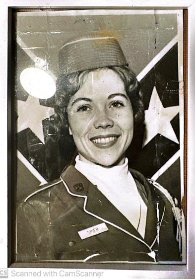
Childhood
Changing America
As a child Sally lived in a San Diego that was both quiet and poised for transformation. In the 1930s, the city still had the feel of a large town, with dusty roads, small neighborhoods, and clusters of orange groves. But change was in the air. The Navy and the newly formed Army Air Corps were expanding their presence, and the hum of military preparation would soon become part of daily life.
Aunt Ruth’s House
Her earliest and fondest memories took place beyond the city limits, at her Aunt Ruth’s sprawling country home. Ruth lived there with three sisters, all unmarried, a notable choice in an era when most women married young, often before 25. Their independence, though unspoken, quietly challenged the cultural norms of the time.
For a child, the house was an adventure waiting to happen. “We especially liked sliding down the banister of her stairs,” Sally recalls. Her Aunt Sadie kept a cow named Bossy, and, to a city child, the sight of fresh milk foaming in a pail was a small marvel.
A Shy Girl Surrounded by Love
Sally describes herself as “shy with adults and new friends,” yet her shyness was buffered by a home steeped in affection. Her mother was “cheerful and loving,” the kind of mother whose warmth anchored the household. Her father, serving in the Army Air Corps, was “selfless to a fault” and spent as much time with his children as possible. This devotion was remarkable in a decade when fathers were often away for work, or, increasingly, for military service.
The House Built While the World Was Changing
While her father was stationed in San Diego with the Army Air Corps, her parents purchased a wood-frame house, a home Sally would return to for decades, until her parents’ deaths. These modest houses were part of a larger wave of suburban-style building in Southern California, a physical expression of both post-Depression hope and the military boom.
Sisters, School, and the Rhythm of Small-Town Life
She shared a bedroom with her younger sister, five years her junior, an age gap that felt vast in childhood. “I thought of her as a little brat."
Their school, Eastside Elementary, was only a block away, close enough for Sally to walk home for lunch. Her Aunt Ruth served as the school principal, a reminder of how family was woven into every corner of her childhood.
The Quiet Joy of Just Being a Child
When asked what she looked forward to about becoming a woman, Sally admits she never thought about it. She was happy “just being a child,” surrounded by grandparents, aunts, and uncles. In the 40s, without the pressure of social media or the acceleration of childhood through mass marketing, children like Sally had the rare freedom to grow slowly, their worlds expanding at a human pace.
The Lasting Impression of Innocence
If there’s one thing she misses most about her childhood, it’s the innocence, not naïveté, but a deep trust in the goodness of the world around her. That trust, cultivated in the warmth of her family and the stability of her neighborhood, would carry her into the uncertain years of wartime and postwar America.
Becoming Herself in the Swinging Sixties
Emergence into Womanhood
In the 1960s, she was buoyed by the quiet security of trusting parents. Independence felt pre-granted, not craved. Around her, the world was shifting. Young women dropped beloved conservative styles in favor of mini skirts, go-go boots, and bold new fabrics, symbols of youthful rebellion and self-expression. Mary Quant introduced her daring mini skirts, hemlines that drove shock and excitement, marking a fashion revolution and a nod to liberation.
Yet, in college at Ole Miss, she embraced the community’s aesthetic: clean-cut, youthful, Ivy League–inspired styles like madras shirts that whispered both privilege and accessible grace.
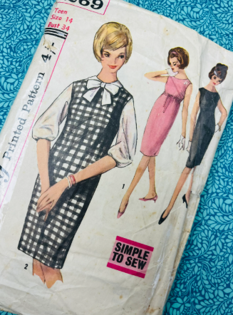
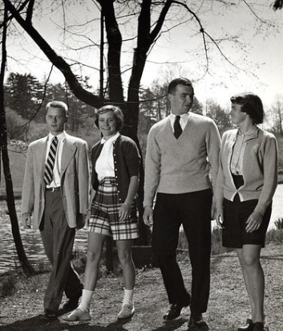
Music evoked memory, crooners like Jack Jones filled dorm rooms. His smooth voice, known for hits like “Wives and Lovers” and “Lollipops and Roses,” shaped the soundtrack of the time.
Early Independence & Career Choices
After college, the thrill of freedom was tempered by uncertainty. Professors nudged her toward teaching, a respectable, time-honored career, but she followed the pull of airplanes and flight. She became a flight attendant for Delta Airlines: an entry into an exclusive world shimmering with glamour.
In that era, a stewardess was celebrated for grace, poise, and style. Airlines carefully curated their image: polished uniforms, perfectly coiffed hair, and manners were all part of the package.
Stewardesses represented the jet-set lifestyle that seemed both radical and accessible, traveling across continents, embodying modern womanhood and independence while wearing perfectly pressed uniforms and makeup. It was a role wrapped in both opportunity and societal expectation.
New Orleans and Los Angeles: Moving Through Change
Assigned to New Orleans, she soon called the French Quarter her own. There, “home” was magnolias and café au lait, a life balanced between familiar Southern charm and the demanding grace of airline work.
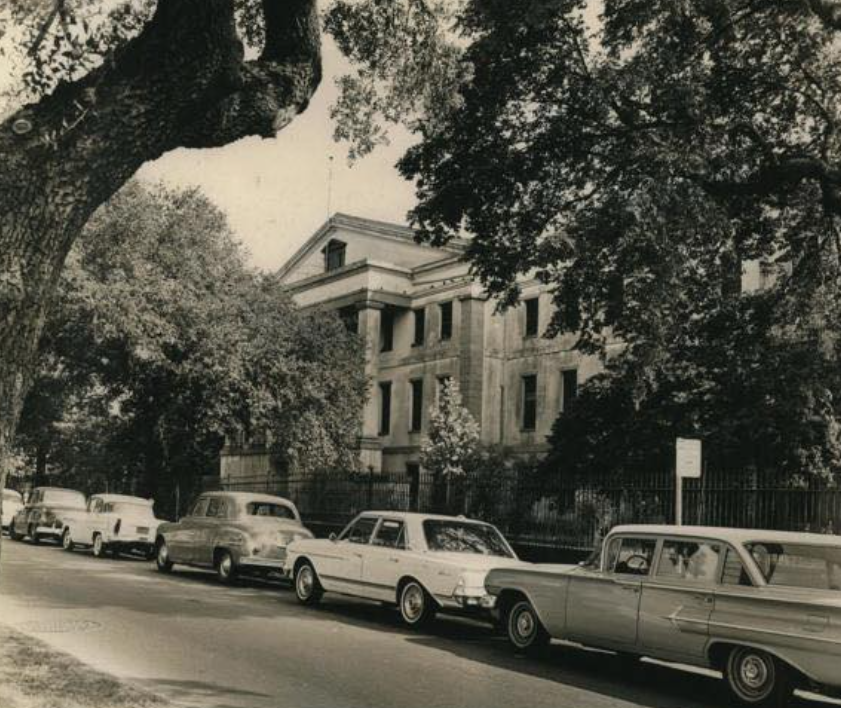
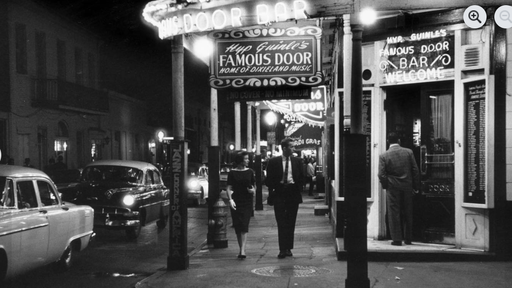
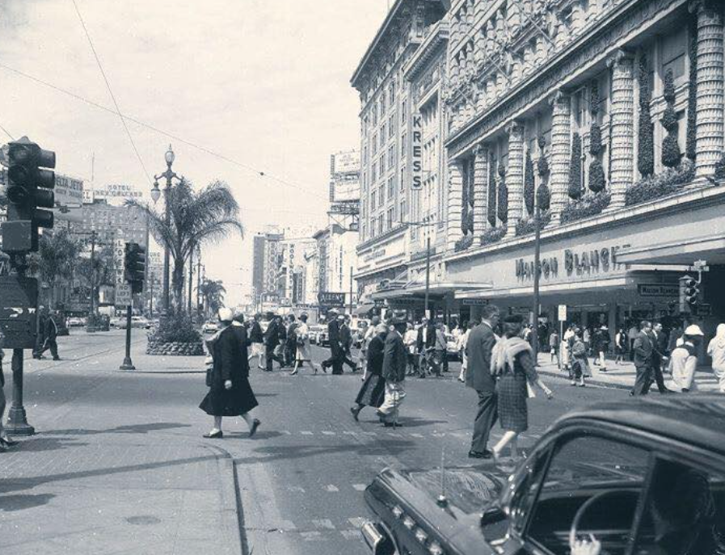
Then came Los Angeles, 1966, marriage, and a seismic change. As she settled into a new life in smog-choked L.A., her work shifted to UCLA’s Graduate Business School, where her day-to-day contrasted sharply with the aisles of jet travel.
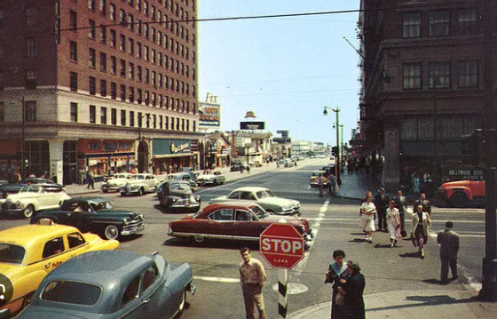
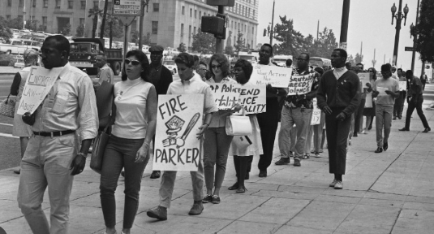
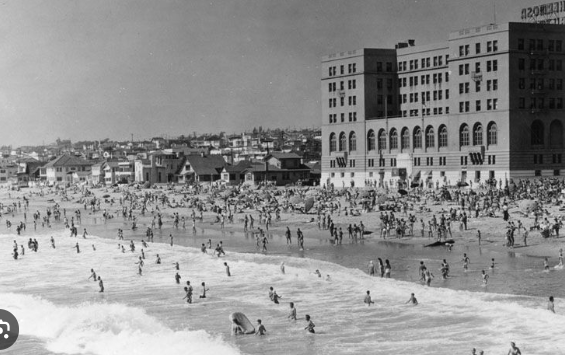
Marriage, Motherhood, and Reinvention
By the late 1960s, the trajectory of Sally’s life had bent toward the path of marriage, children, and a home meant to echo the one she’d grown up in, loving, supportive, and full of family.
She never doubted she wanted children. “I suddenly had a big responsibility… I felt like a different person. But I was happy about it.” Her sons arrived in an era when parenting was still defined by hands-on mothering, often without the support networks or flexibility women now have. In those early years, the prevailing emotion was devotion. She delighted in sharing her children with her extended family in Bastrop, especially her aunts, who “were thrilled to hold and play with them.”
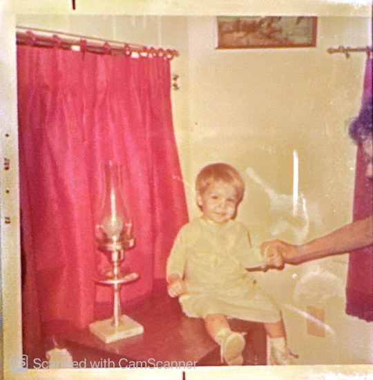
Shifts in the Foundation
The 1970s and early ’80s brought their own upheavals. Divorce, though increasingly common by then, was still a rupture that carried social weight. For Sally, the shift to living alone was “a relief at first,” a release from the quiet constraints of a marriage that no longer fit. But it also meant navigating adulthood without the protective framework she had known since childhood.
There was another transformation running parallel, one tied to a wider change in women’s lives. The women’s movement was in full swing, reshaping workplaces, redefining gender roles, and slowly dismantling the assumption that a woman’s most productive years ended when her children were grown.
A Career, and a New Chapter of Self
For Sally, that second act arrived unexpectedly. In her fifties, she stepped into a role at The Historic New Orleans Collection, working as a reference associate in the Williams Research Center. She found herself immersed in Louisiana’s layered past, connecting with scholars, writers, and visitors from around the world.
“It was a wonderful, rewarding experience,” she recalled. “I learned so much about Louisiana history and met people from all over the world.” For a woman raised in a small, affectionate orbit of family, the museum became both a window to the wider world and a stage where she found her voice.
The Broader Lens
Looking back, Sally recognized she had lived through, and participated in, one of the great shifts in the 20th century: the normalization of careers for women. “That was once only for men,” she observed. In her youth, professional ambition was often framed as an exception; by the time she retired, it was an expectation.
Yet she also saw what had not improved enough. “Civility, worldwide, has declined hugely,” she reflected. Her faith, simple and enduring, anchored her perspective: “I’ve always believed God loves all his children.”
Aging
Becoming a grandmother was joyful. She threw herself into caring for her grandchildren with the same energy and devotion she’d given to her own children.
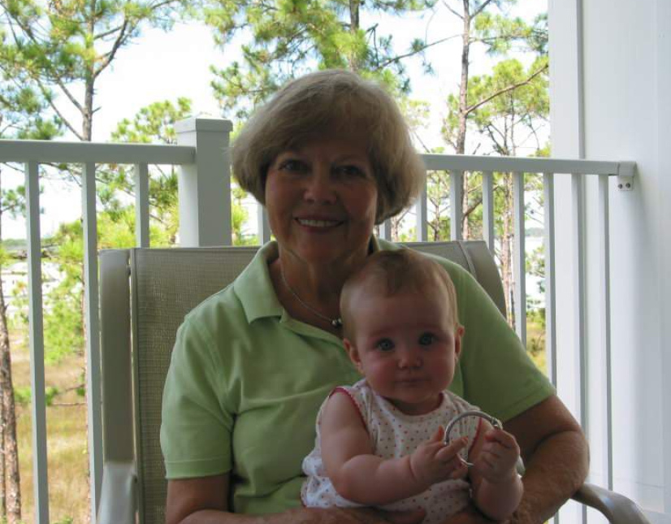
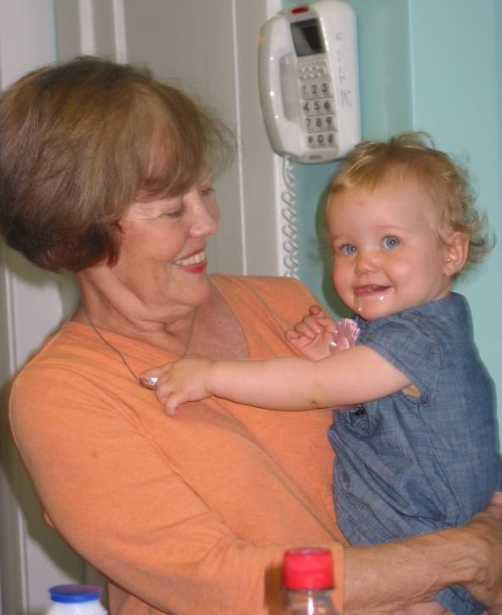
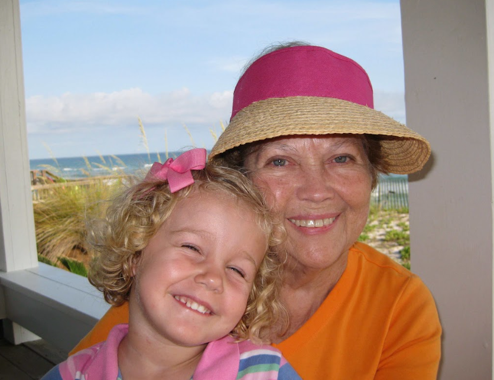
She had lived through decades of change, war years, postwar optimism, the feminist movement, and the rapid march of technology, but oddly enough, she didn’t feel the weight of age until she turned 80. Only when her body began to slow did she recognize the speed of time.
What troubles her most is the way modern culture treats the elderly, politely ignored at best, dismissed as “useless and irrelevant” at worst. She contrasts this with her observations of Chinese traditions, where elders are revered, sought out for advice, and seen as the living memory of a family.
To her, aging with grace is about being pleasant to others and letting go of petty annoyances. “Don’t worry about age,” she says, “even though it’s hard not to. Be pleasant to everyone you can. Try not to obsess over the small stuff. Keep smiling!!”
One of her proudest personal victories was overcoming her childhood homesickness. She had been a child who clung to the comfort of home, who cried through two whole weeks at a church camp. For years, leaving home had felt like an ordeal.
But over time, she learned to “spread her wings,” to loosen her grip on the familiar. That transformation, going from a homesick girl to a woman who built a life in new cities, tried new careers, and faced change head-on, shaped her sense of self.
A Life Intertwined with American History
World War II (1939–1945): A Childhood Marked by Resilience
In 1940s San Diego, blackout shades turned day into night, and Sally’s memories of playing amid austere Red Cross facilities spoke to wartime improvisation and community spirit. Floating balloons over Balboa Beach and sledding down snowy hills in Spokane captured childhood joy in stark contrast to global turmoil.
These moments mirror the vast domestic mobilization and local solidarity that characterized life on the homefront, where everyday rituals and small delights shone amid rationing and uncertainty.
Elvis and the Rise of Rock ‘n’ Roll (1950s)
Rock ‘n’ roll crackled through the radio, stirring excitement and change. Sally didn’t initially embrace Elvis’s early rock persona, perhaps too brash for her taste, but warmed to the seasoned showman he became, especially when backed by an orchestra and the Sweet Inspirations. It was his “American Trilogy” performance that won her over, showing how rock’s evolution mirrored broader shifts in style and sentiment.
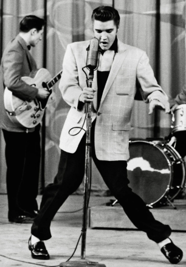
The JFK Assassination (1963): A Nation Pauses
She remembers exactly where she was when JFK was assassinated, perhaps stunned, disconnected, unsure whether the grief playing out on television could be real. Like many, the days that followed deepened her feelings about his presidency, a mix of admiration and nostalgia.
The Civil Rights Movement (1950s–1960s): A Personal Awakening
Martin Luther King Jr.’s leadership and his iconic speech at the Lincoln Memorial shook her awareness. She realized how complacent acceptance of segregation had become, and that it had to end. As a student at Ole Miss during James Meredith’s integration in 1962, an event met with violent resistance and federal intervention, she lived at the heart of these social tremors. Witnessing history unfold firsthand instilled in her the urgency of justice and change.
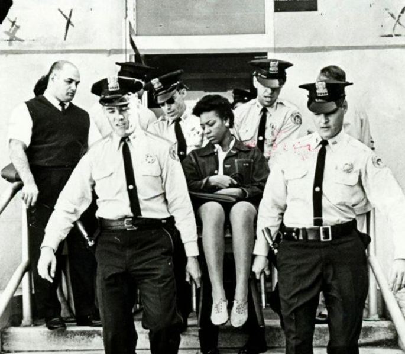
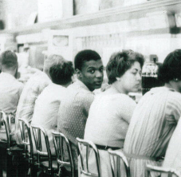
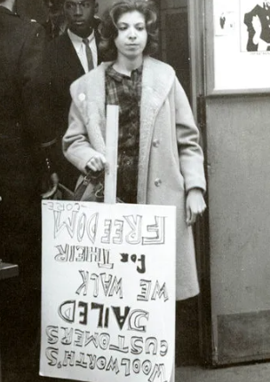
The Moon Landing (1969): Shared Wonder
Watching astronauts walk on the moon with her husband Bob and their infant Gregory filled her with pride and awe.
The Women’s Liberation Movement (Late 1960s–1980s): Change With Caution
While she recognized the movement’s significance, the dramatic fringes, protests, bra burning, radical slogans, felt distant to her Southern roots. It was change, yes, but not the kind she connected with fully.
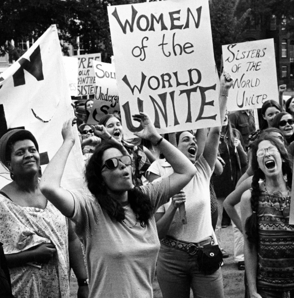
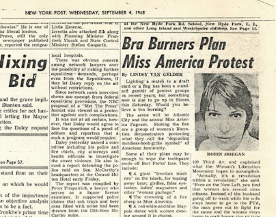
The Vietnam War (U.S. Involvement, 1965–1973): From Belief to Regret
Working at UCLA during the protests, she saw campuses erupt with dissent. Initially, she supported the war based on Cold War-era logic, contain communism or risk global collapse. Over time, she came to see it as a tragic misstep, one that cost too many lives for an elusive peace.
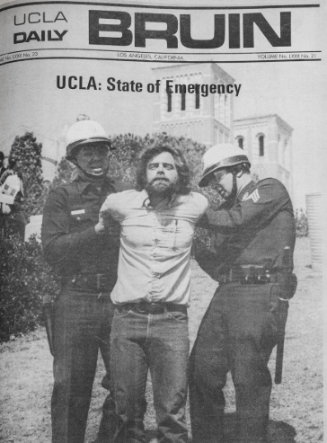
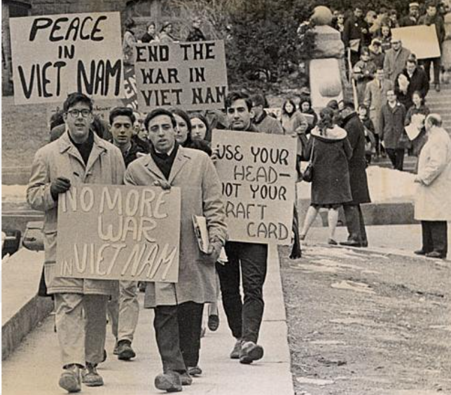
The Rise of the Internet (1990s): From Skeptic to Reliance
At first, the internet was just another novelty. Now? She can't imagine life without it.
September 11, 2001: A Day of Infamy Revisited
She never expected an attack on U.S. soil. Like many, she felt a deep collective shock, echoes of Pearl Harbor’s horror, as President Roosevelt once put it. The phrase “a day that will live in infamy” felt eerily familiar.
Deola Daigle: A Woman’s War
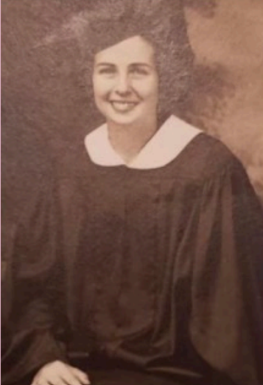
A World on the Edge
Across the Atlantic, Adolf Hitler’s armies swept across Europe with terrifying speed, occupying France, bombing Britain, and setting in motion the machinery of genocide that would come to be known as the Holocaust. In the United States, the Great Depression had officially ended, but its shadow lingered. Jobs had returned, but uncertainty was a constant companion. And in towns across America, the Selective Training and Service Act, the first peacetime draft in U.S. history, had begun reshaping lives.
In small parishes of Louisiana, like so many places in America, life went on as usual, or so it seemed. On front porches, women snapped beans while the radio played The Andrews Sisters. In the evenings, news bulletins reported on far-off battles in countries most Americans had never seen. It was in this atmosphere, a blend of domestic familiarity and uneasy foreboding, that Deola Daigle became engaged to a young man named Albert.
An Engagement on Borrowed Time
Albert, like many young men of the time, was already thinking ahead. He knew that service in the army was likely inevitable. Rather than marry quickly, he proposed that they wait until he had completed his required year of duty. In the summer of 1941, he reported to Fort Bragg, North Carolina, for training. They imagined this separation would be temporary, a year of distance before they could begin their life together.
In those months apart, they exchanged letters, their words carrying tenderness and hope between towns and army posts. Deola imagined a quiet future: a wedding, a home, perhaps a family in a few years’ time.
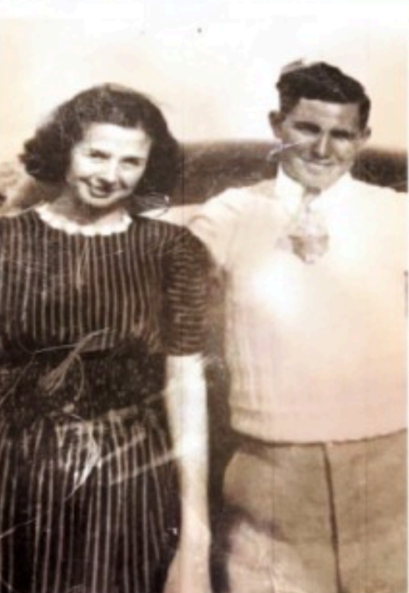
December 7, 1941
The attack on Pearl Harbor was a shockwave. Japan’s sudden strike destroyed battleships, killed over two thousand Americans, and shattered the country’s sense of safety. The next day, President Franklin D. Roosevelt declared war. For Deola and Albert, this meant their year apart would stretch indefinitely, “for the duration of the war,” as the official term went. That phrase, deceptively vague, meant months or years. It meant uncertainty. It meant goodbye.
A Wartime Wedding
In April 1942, Albert came home on leave for Easter. He would only be there for one day. The couple decided not to wait any longer. That Sunday morning, Deola borrowed a white dress. There was no elaborate church ceremony, no professional photographer, no honeymoon. They were married in a rush, surrounded by family, but even as they celebrated, a clock ticked toward his departure. At 5 p.m., Albert boarded a train, leaving his new wife on the platform.
The War Comes Home
When Albert was stationed in Gatesville, Texas, Deola followed him. She arrived to find a town transformed by the military presence. Housing shortages were severe, newly built barracks for soldiers, and hastily converted rooms for their wives. She found a small, rented room and began to build a makeshift home.
Her life was marked by two constants: waiting and adapting. She walked into town to buy food, navigated ration books for sugar, meat, and butter, and learned the art of stretching every ingredient. Fresh bread, the kind her mother baked, became a rare luxury. Her father’s home-raised meat was a memory. In Texas, she found herself craving the tastes of home, but rationing dictated what could be bought and when.
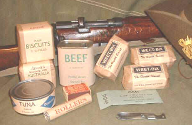
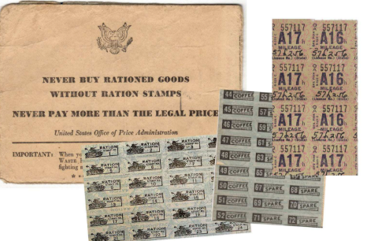
Finding Community
Loneliness was an unspoken enemy in wartime America. For military wives in towns far from family, organizations like the United Service Organizations (USO) became lifelines. Deola visited the USO for coffee, doughnuts, and the occasional board game. These gatherings offered relief, a few hours of conversation, laughter, and shared stories from women in similar situations.
Meeting and Missing
January 1944 to September 1945
“JANUARY 1944, HE WAS SENT TO FORT LEWIS IN AUSTIN, TEXAS. MY BABY WAS THREE MONTHS OLD. I WENT TO MEET HIM THERE. I WENT BY BUS. IT WAS A LONG TRIP BY BUS AT NIGHT. CAROL CRIED A LOT. I ARRIVED IN THE EARLY MORNING HOURS. IT WAS VERY COLD. AUSTIN HAD A RARE SNOWFALL. THE HOUSE MY HUSBAND RENTED HAD HIGH STEPS TO CLIMB AND THEY WERE FROZEN. THE CAB DRIVER GRACIOUSLY HELPED ME UP THE STEPS. MY BABY, CAROL GOT TO MEET HER DADDY FOR THE FIRST TIME.”
, DEOLA DAIGLE
The “rare snowfall” is not romantic exaggeration: Austin recorded a heavy snowfall in mid-January 1944 (one of the city’s most notable snow events in the 20th century). The city’s roads would have been slick, steps iced over, and a woman arriving by overnight bus with a three-month-old would have felt every degree and every mile.
The moment itself is quiet and thunderous: a tiny child opening her eyes to a father who has been ink and paper, a voice on a long, slow line of letters, until now.
Two months later, Deola follows his movements again. Albert is reassigned to Camp Gruber near Muskogee, Oklahoma; she travels overnight, Carol sick on the train, and her luggage never arrives. Deola’s memory is sharp here:
“ABOUT TWO MONTHS LATER, HE WAS TRANSFERRED TO CAMP GRUBER IN MUSKOGEE, OKLAHOMA. AGAIN, I WENT TO BE WITH HIM, AND AGAIN ARRIVED IN THE MIDDLE OF THE NIGHT. CAROL GOT SICK ON THE TRAIN AND VOMITED ALL OVER ME. WHEN WE ARRIVED AT THE HOUSE WHERE ALBERT HAD RENTED A ROOM, I DISCOVERED MY LUGGAGE HAD NOT ARRIVED. THE BABY HAD NO CLEAN DIAPERS. THE LANDLADY WAS AN ANGEL. SHE LET ME HAVE SOME KITCHEN TOWELS TO USE UNTIL I COULD WASH THE DIAPERS AND GET MY LUGGAGE.”
, DEOLA DAIGLE
Camp Gruber was a major World War II training installation; during the war it trained infantry, field-artillery and tank-destroyer units that later fought in Europe. Housing near these training camps was chronically short, and many soldiers’ families lived in boarding houses, upstairs rooms over businesses, or converted farmhouses, places where landladies often controlled key comforts (access to an oven, a basin of hot water, a line of clean sheets). Deola’s scene, a frightened mother with a sick infant, arriving late at night, saved by a landlady’s kindness, matches thousands of similar wartime vignettes. The fact that a landlady loaned kitchen towels to make diapers work speaks to the everyday economies of care women built for one another near bases.
Think about the logistics behind those sentences: train or bus routes running at night to connect small towns and military posts; crowded stations where luggage could be delayed or lost; rationing and scarcity making replacement clothing or supplies difficult to come by. Intercity bus lines (Greyhound and regional carriers) still carried large numbers of civilians then; railroads and passenger trains carried troops and their families on constrained timetables. Long overnight trips, crying infants, late-night cabs, frozen steps, all common elements of a wartime civilian’s travel.
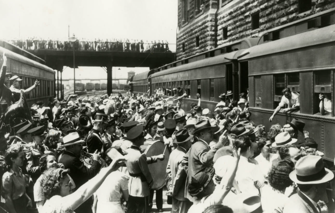
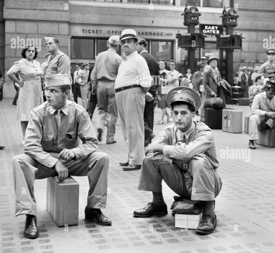
By August 1944, the record turns again: Albert gets orders overseas. Deola is pregnant once more.
“BECAUSE I WAS PREGNANT AGAIN, HE GOT A PASS TO ACCOMPANY ME HOME ON THE TRAIN, BUT HE HAD TO TURN RIGHT AROUND AND GO BACK TO CAMP.”
, DEOLA DAIGLE
This line holds the ache of every wartime parting: a short intimacy followed by the familiar goodbye. It also marks the moment where ordinary logistics meet the vast, unpredictable sweep of global strategy. By mid-1944 the Allied armies were pouring men into France (D-Day June 6, 1944 was the turning point), and by late 1944 many American units that trained at stateside camps were on the continent, fighting through northern France, the Low Countries, and into Germany. The months that followed would see some of the war’s fiercest winter fighting.
Albert landed in France in 1944 and was involved in two of the great, terrible fights of that winter and spring: parts of the Rhineland fighting and the Battle of the Bulge. Deola writes this plainly:
“HE LANDED IN FRANCE IN 1944 AND WAS IN TWO MAJOR BATTLES, ‘THE RHINELAND BATTLE’ AND THE ‘BATTLE OF THE BULGE’.”
, DEOLA DAIGLE
Both of those campaigns were ferocious and critical. The Battle of the Bulge (December 16, 1944 – January 25, 1945) was Hitler’s last major offensive on the Western Front; it took place in the Ardennes and in bitter winter conditions that exhausted soldiers on both sides. The Rhineland operations were a series of Allied offensives in late 1944 and early 1945 that pushed into Germany’s western defenses and prepared the way for entry across the Rhine. For soldiers who fought there, the weather, the mud and snow, the confusion of sudden offensives and counter-attacks, and the strain of long marches and artillery barrages left deep scars.
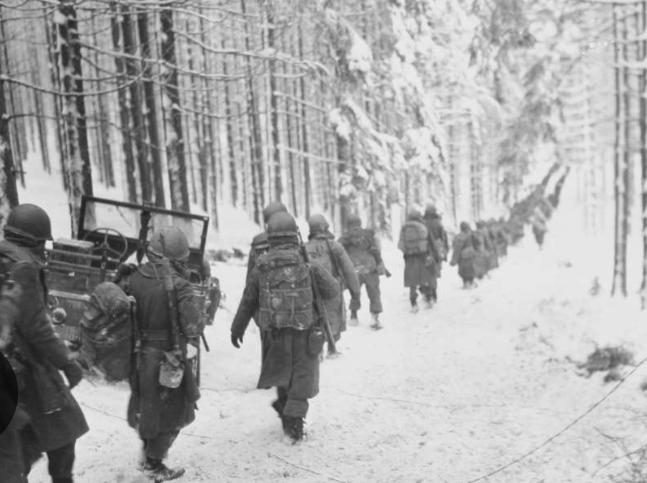
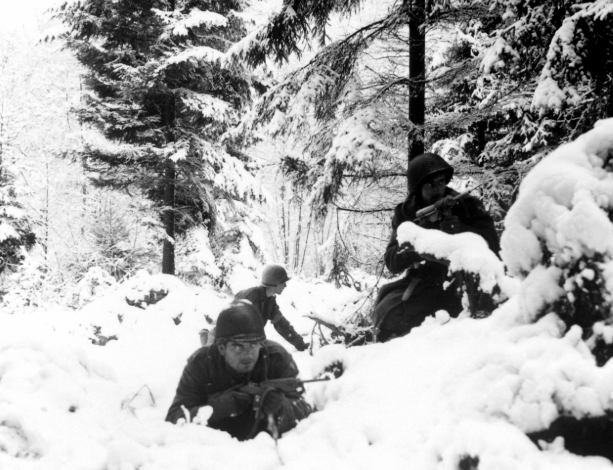
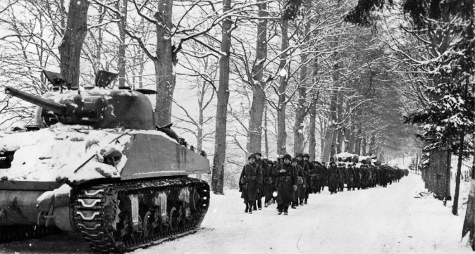
Back home, Deola’s life contracted around a heartbeat and a fear. She lived with her parents for a while, then with Albert’s sister Alberta and her husband Murphy, and later was taken in by family friends. Children and other helpers made the days possible: “Becky”, an eight-year-old niece, became an unexpected helper, watching the babies while adults worked or worried. Deola’s fear when she heard a car at night, “I was so afraid it was someone coming to tell me Albert had been killed in the war”, is historically echoed in thousands of home front letters and oral histories. Waiting was not passive: it was a state of sustained vigilance. (On the home front, newspapers, neighborhood watch groups, and every arriving automobile could mean news, good or ruinous.)
When Germany surrendered in May 1945 (V-E Day), the fighting in Europe effectively ended, but that did not mean men came home the next week. Troops had to be processed and transported. The massive, complex effort to bring millions of service members home, by sea and by air, is often called Operation Magic Carpet: it took many months to reassemble families. It’s therefore entirely plausible, and historically typical, that Albert would not be home until September 1945. Deola remembers the surprise of that night:
“THE WAR ENDED IN MAY 1945. MY HUSBAND CAME HOME IN SEPTEMBER OF THAT YEAR. HE SURPRISED US BY COMING IN AT THREE IN THE MORNING. CAROL WAS TWO AND A HALF BY THEN. SHE WAS ONLY EIGHT MONTHS OLD WHEN LAST SAW HER. BRENDA WAS EIGHT MONTHS OLD. I THINK HE FELT THAT SHE WAS THE EIGHT-MONTHS-OLD HE HAD LEFT BEHIND.”
, DEOLA DAIGLE
That pre-dawn knock, the rustle of a uniform in the doorway, these are the images that closed the four-year rupture for many families. For some families the reunions were sweet, for others ragged and hard, and for too many they never came.
After Albert’s return, Deola writes they resumed their life and the family grew: seven more children followed, money was tight, and their marriage endured for forty-four years. She also records the grief of friends who did not return: “Our friend Charles Nini died of a heart attack while under a siege in a battle in France.” That line is both personal elegy and a reminder that the war’s arithmetic of loss included not only battlefield deaths but the long, permanent changes to bodies and minds that came home with survivors.
A Woman of Her Time, and Ahead of It
Deola’s wartime life was both ordinary and extraordinary. Ordinary in the sense that thousands of women experienced similar disruptions, weddings shortened by train schedules, babies born in fathers’ absence, evenings spent alone listening to war news. Extraordinary because she faced it all with quiet endurance. She did not see herself as heroic; she was simply doing what needed to be done.
In truth, she was part of a generation of women who bridged eras, raised in the traditions of the 1920s and 30s, but thrust into a modern, mobilized America where women took on unprecedented roles in factories, offices, and communities. While “Rosie the Riveter” became a cultural icon, women like Deola, who didn’t rivet planes but kept the home front intact, were just as essential to the war effort.
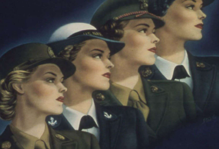
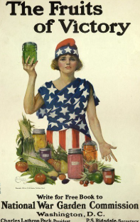
Carrying Rosie’s Legacy
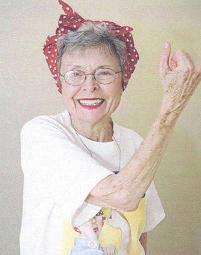
In March, I had the opportunity to participate in a service project at the National World War II Museum, where I was paired with a real-life “Rosie the Riveter”, one of the many women who stepped into defense industry roles during World War II. I was matched with Lucretia Jane Tucker, or simply “Jane.”
Hearing her story firsthand was unforgettable. Jane spoke with warmth, grit, and pride, not just about her work, but about what it meant to stand tall in a world that wasn’t welcoming. At the end of our visit, she gave me a signed information card with her photo and story on it and told me, “Save it for your grandchildren.” I’ve since framed the card and hung it in my room to keep it safe.
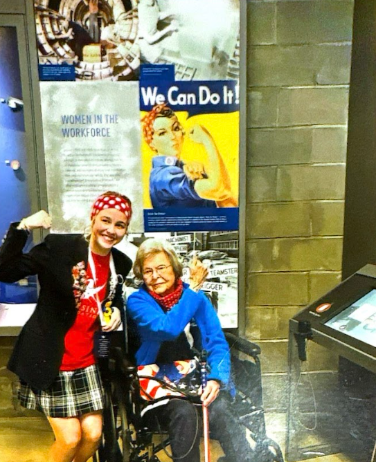
To honor Jane, I used online interviews and articles about Jane and the Rosies to write her story.
Jane’s Story
Lucretia Jane Tucker, a woman approaching 98 with a bright red lipstick smile, remembers a time when the world was changing, and she was right there in the thick of it.
Jane was born in 1927 in the small Alabama town of Lineville. Her early years were defined by the Great Depression and the challenges of being a young girl in a single-parent household. Her mother, Iris, was a divorced woman in an era when that was unheard of, working as a switchboard operator to make ends meet. Jane and her older sister, Betty, knew what it meant to go without.
"I grew up in the depression. I remember it clearly," she says. "My mother and father were divorced when I was two. So we went back to my hometown, back to Linville to live. It had a population of about a thousand people. We were like everyone else. My mother worked. She was to play the piano at a silent movie. Then, she had a job as a what we called a switchboard operator. She worked for the telephone company. She made about $25 a month. And so we struggled, of course, for financial reasons. But I did not know that as a child."
This childhood hardship planted a seed of fierce independence in Jane. She vowed that one day, she would never have to ask anyone for anything again. Her mother's quiet dignity and determination in the face of financial and social struggles were a constant example. Iris would make partial payments on their grocery and clothing bills, promising to pay them off completely someday. When an opportunity arose, she made good on her promise, a testament to her character in a time when such integrity was valued.
"She told them, 'I'm going to leave and go get a job in a war in a defense plant, and I will pay you what I owe you.'... One of the men, the man who owned the clothing store, said, 'Miss Iris, you don't need to pay me anything else. Just forget that, because you've paid me enough.' But she did. She paid him. So that was part of the way that I grew up."
The Lure of Opportunity
The chance for a new life came in 1943, courtesy of a cousin in Savannah, Georgia. Word spread that defense plants were hiring, and women could earn a great living. For Jane, who was just 16 and bored with the slow pace of Lineville, it was an adventure. For her mother, it was an escape from poverty and judgment. The three women, Iris, Betty, and Jane, packed their bags and boarded a train for Savannah. The 16-hour journey was a powerful sign of the times. The train was a "wall of khaki," packed with young soldiers heading off to war, and the women had to sit on their suitcases until some men offered them their seats.
Jane, who was earning a measly dollar a day at the local five-and-dime store, couldn't believe her ears when she was told her starting wage as a trainee welder would be $1.20 an hour. "Wow, I thought I would have lots of money," she recalled. The money was a powerful motivator, but for Jane, it was also about the newfound freedom and a chance to do something important.
"My mother was motivated, I think of the courage that she had to go to a city, and she didn't know what she was getting into. I'm sure she didn't know we were going to be surrounded by armed forces, Air Force, Navy, and Fort Craven Army. It took a lot of courage for her to do that. But that was her determination too. And she paid everything that she owed."
In Savannah, the Tucker women joined the workforce at Southeastern Shipbuilding Corp., learning to weld the vertical steel walls of "Liberty Ships," the 441-foot cargo vessels that were the workhorses of the war effort. The work was hard, demanding, and often dangerous. It meant wearing heavy boots, thick pants, long-sleeve shirts, and gloves in the sweltering Savannah heat. But the sense of purpose and the steady income were empowering.
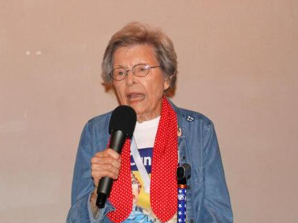
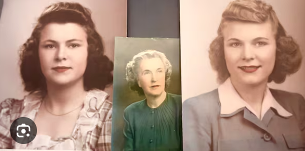
Finding Freedom and a Community
The money was life-changing. Not only could Jane contribute to her family, but she could also buy things for herself, like a pretty dress. "It was a great feeling of independence. I no longer had to ask anybody for money," she says. This financial freedom led to a small but significant act of rebellion for Jane and her fellow "Rosies", smoking cigarettes.
"I started smoking, which was not a good thing. But women did that. Until then, this is a piece of history. Ladies would not smoke in public... we said, 'Well, you know, we are doing men's work. We can smoke if we want to where we want to.'"
This shift in social norms was met with skepticism from some. The local people in Savannah often looked down on the women who worked in the shipyards, and some men in the factories weren't thrilled to have them there. "They did not want women to work... They said, we don't want women to work because women are too emotional. They're not strong enough physically. They will be a distraction to the men, and they'll be sick all the time."
The Rosies of Savannah formed their own close-knit community. Many of them were from small towns just like Jane, and they banded together, working and socializing with each other. Their social life revolved around USO dances and entertaining the troops, something Jane considered a "patriotic duty."
"We felt it to be our patriotic duty to entertain those troops," she says, adding with a smile that the soldiers were "gentlemen."
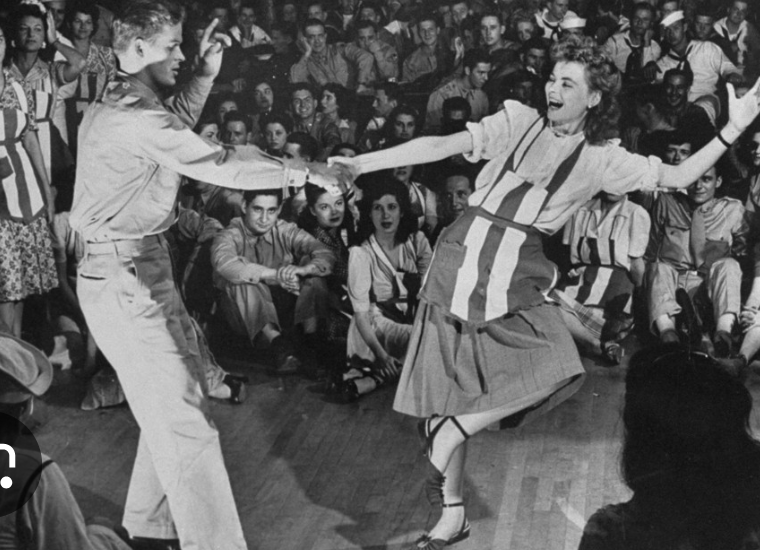
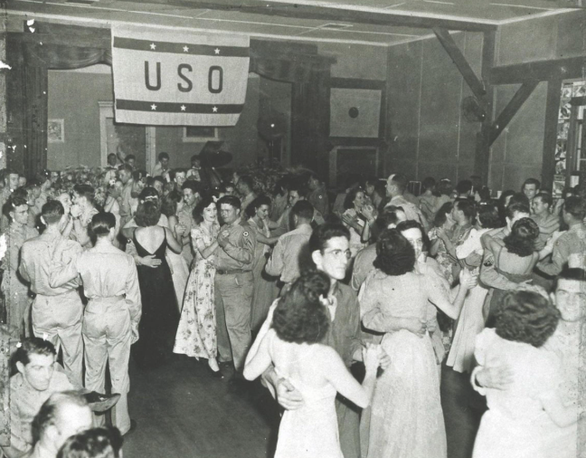
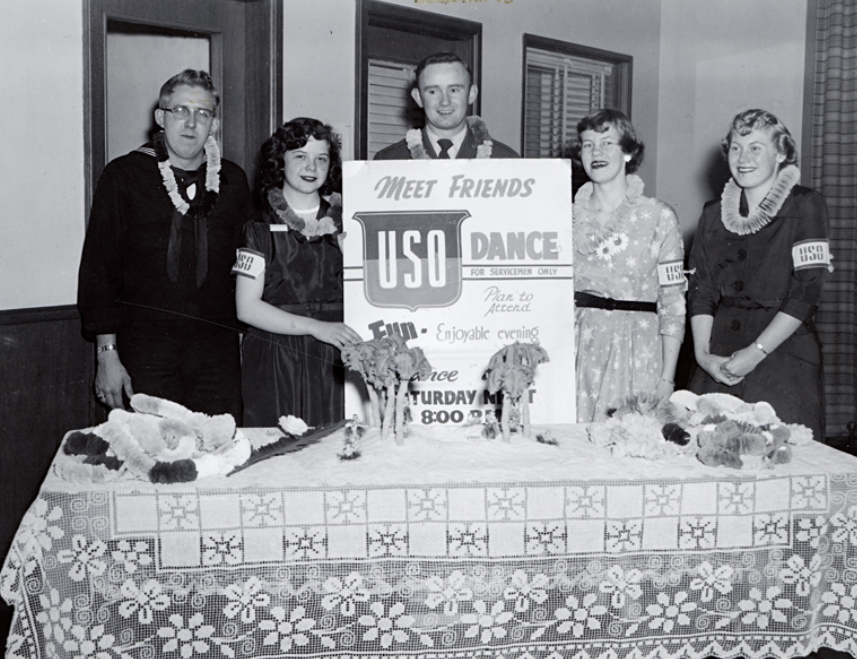
Living in the workers' duplexes, Jane experienced a level of comfort she'd never known before. The new homes had running water and bathtubs, a far cry from the outdoor well and outhouse she'd grown up with. It was a stark reminder of how far she had come.
The Rosies of Today
When the war ended, so did most of the Rosies' factory jobs. The returning soldiers needed work, and the women were expected to return to their traditional roles. "When the war was over, the women got pushed aside; that's how it was," Jane reflects. "Women had to give up their jobs and go home to small jobs. But we never forgot the sense of being able to be free and do what we wanted."
Jane went back to Alabama to finish high school, but her brief time in Savannah had changed her forever. It had expanded her worldview and shown her that she could be more than just a small-town girl. She moved to Chicago to study dental hygiene and went on to have a career as a dental assistant.
Decades later, with the 50th anniversary of WWII, Jane and her fellow Rosies began to reconnect and share their stories. "You were busy living your life, you didn’t talk about these things," she said. Jane is now one of a dwindling number of Rosies, and she's made it her mission to ensure their contributions are never forgotten. She speaks to schools and aviation groups, sharing her story with a new generation.
"We just don’t want people to forget what we did."
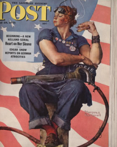
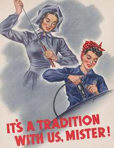
Start the Conversation
Select a season of a woman’s life to explore thoughtful questions you can ask about that time.
The women in our lives hold entire worlds in their memories, childhood streets, moments of courage, seasons of doubt, quiet victories. The questions below are meant to help you start those conversations, with your mother, grandmother, aunt, mentor, neighbor, or any woman whose life has touched yours.
Childhood
- What’s the first place you remember really loving?
- What kind of girl were you, shy, loud, bossy, careful?
- What was your mom like when you were growing up?
- Describe your dad when you were growing up.
- Describe your childhood home.
- Describe your childhood bedroom.
- Describe your elementary school.
- Did you have a favorite doll or toy?
- What is something small and specific you miss about childhood?
- When you were little, what excited you about becoming a woman?
- Who was your childhood best friend, and what did you love doing together?
Becoming a Woman
- When and where did you meet my grandfather?
- What advice would you give about love or marriage?
- What did you wear to feel pretty?
- Describe the fashion trends when you were young.
- What songs remind you of being a young adult?
- Did you ever feel resistance to social norms, or did they align well with you?
- Describe a time you realized you had your own mind and the right to your own life.
- What did independence mean to you at 16? At 20?
- How did your view of yourself change as you got older?
- What was the hardest season of your life?
- Who were your role models as a young woman?
Womanhood
- What were women praised for during your adult life?
- What’s something you learned the hard way?
- Describe living alone for the first time.
- List all the places you’ve lived, how you ended up there, how long you stayed, how you liked it, and why you eventually moved.
- What kind of work did you do?
- If you knew you would not fail, what would you have done? (For example: dreams, jobs, places to live.)
- What did you carry in your purse?
- What is something you were too hard on yourself about?
- Did you always know you wanted kids?
- Did motherhood change the way you saw yourself?
- What’s a moment with your kids that has stayed in your mind?
- What do people not know about motherhood?
- What was more fulfilling for you, a family or a career?
- What kind of home did you want to make?
- Is there something your parents did in raising you that you didn’t want to do for your kids?
- Has faith in God defined or shaped your life in any way?
- What do you remember about other women in your life, friends who supported you, taught you something, or inspired you?
- Have you ever experienced jealousy or competition with other women?
- Is there something all women can understand without saying a word?
- What has changed the most for women in your lifetime?
- What hasn’t changed enough?
- Describe a time you surprised yourself.
Aging
- What did it feel like to have a grandchild?
- What would you say to your great-grandchildren?
- What parts of yourself do you see in your grandkids?
- When did you first feel like you were getting older?
- What do people often get wrong about getting older?
- What have you learned to stop caring about?
- What do you hope people remember about you?
- What does it mean to you to age with grace?
- Do you feel like the same person you were when you were young?
- What are you most proud of in your life?
Historical Events
- World War II (1939–1945)
- Elvis Presley and the rise of rock and roll (1950s)
- The assassination of JFK (1963)
- The Civil Rights Movement (1950s–1960s)
- The Moon Landing (1969)
- The Women’s Liberation Movement (late 1960s–1980s)
- The Vietnam War (U.S. involvement peaked in 1965–1973)
- The rise of the internet (1990s)
- September 11, 2001
- COVID-19 pandemic (2020–2023)
"We just don’t want people to forget what we did."